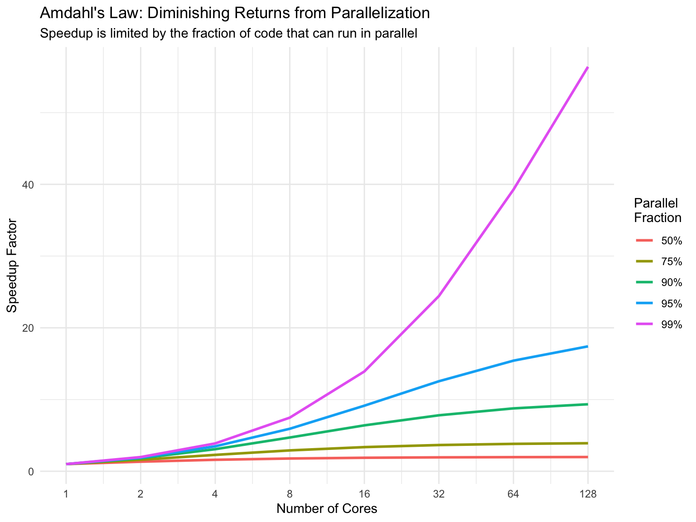

14 Parallel Computing in R
After completing this chapter, you will be able to:
- Understand when parallel computing provides performance benefits
- Use the future ecosystem for parallel programming in R
- Apply future_lapply() and future_map() for parallel iteration
- Choose between forking and socket-based parallelization
- Understand the differences between explicit and implicit parallelization
- Avoid common pitfalls like resource competition
- Debug functions and handle errors in parallel contexts
- Cache results to avoid recomputation
14.1 Why Parallel Computing?
Modern computers have multiple processor cores, but by default R only uses one. This means that when you run a computationally intensive analysis — like bootstrapping, permutation tests, or processing thousands of samples — most of your computer’s power sits idle.
Parallel computing lets you use all available cores simultaneously, potentially reducing computation time by a factor equal to your core count. A task that takes 8 hours on one core might take just 1 hour across 8 cores.
In biosciences, parallel computing is especially valuable for:
- Bootstrapping for confidence intervals
- Permutation tests for significance testing
- Simulation studies (e.g., population genetics)
- Processing many samples (e.g., analyzing hundreds of RNA-seq files)
- Cross-validation in machine learning
- Parameter sweeps for computational models
14.2 How Many Cores Do You Have?
Before parallelizing, find out how many cores are available:
This number includes both physical cores and “logical” cores (from technologies like Intel’s hyperthreading). For CPU-intensive tasks, your effective speedup is typically limited by the number of physical cores.
14.3 A Motivating Example
Let’s start with a simple example to demonstrate the power of parallelization. We’ll create a deliberately slow function that simulates a computationally expensive operation:
14.3.1 Serial Execution
First, let’s process 8 samples the traditional way:
As expected, processing 8 samples at 2 seconds each takes about 16 seconds.
14.3.2 Parallel Execution
Now let’s do the same thing in parallel using the future.apply package:
The parallel version is dramatically faster! With 8 cores, we can process all 8 samples simultaneously, reducing the time from ~16 seconds to ~2 seconds.
Let’s verify the results are identical:
14.4 The Future Ecosystem
The examples above use the future package ecosystem, which provides a unified, elegant approach to parallel programming in R. The key packages are:
| Package | Description |
|---|---|
| future | Core package defining how code is evaluated |
| future.apply | Parallel versions of apply functions |
| furrr | Parallel versions of purrr functions |
14.4.1 Setting Up Parallel Execution
Before running parallel code, you must set a “plan” that determines how futures are resolved:
For most users, plan(multisession) is the safest choice as it works on all operating systems.
14.4.2 future_lapply: Parallel Apply
The future_lapply() function is a drop-in replacement for lapply():
14.4.3 furrr: Parallel purrr
If you prefer purrr’s syntax, furrr provides parallel versions of all map functions:
14.5 A Real Example: Bootstrapping Gene Expression
Let’s apply parallel computing to a realistic bioinformatics task: bootstrapping to estimate confidence intervals for differential expression.
14.5.1 Setup
set.seed(1234)
# Simulate gene expression data for 1000 genes, 50 samples
n_genes = 1000
n_samples = 50
expression_data = tibble(
gene_id = rep(paste0("gene_", 1:n_genes), each = n_samples),
sample_id = rep(paste0("sample_", 1:n_samples), n_genes),
group = rep(rep(c("control", "treatment"), each = n_samples/2), n_genes),
expression = rnorm(n_genes * n_samples, mean = 10, sd = 2)
) %>%
# Add a treatment effect to some genes
mutate(
expression = if_else(
gene_id %in% paste0("gene_", 1:100) & group == "treatment",
expression + rnorm(n(), 2, 0.5), # Upregulated genes
expression
)
)
head(expression_data)| gene_id | sample_id | group | expression |
|---|---|---|---|
| gene_1 | sample_1 | control | 7.585869 |
| gene_1 | sample_2 | control | 10.554858 |
| gene_1 | sample_3 | control | 12.168882 |
| gene_1 | sample_4 | control | 5.308605 |
| gene_1 | sample_5 | control | 10.858249 |
| gene_1 | sample_6 | control | 11.012112 |
14.5.2 Bootstrap Function
# Function to bootstrap fold change for one gene
bootstrap_fold_change = function(gene_data) {
# Resample within each group
boot_sample = gene_data %>%
group_by(group) %>%
slice_sample(prop = 1, replace = TRUE) %>%
ungroup()
# Calculate mean expression per group
means = boot_sample %>%
group_by(group) %>%
summarise(mean_expr = mean(expression), .groups = "drop")
# Calculate fold change (treatment / control)
fc = means$mean_expr[means$group == "treatment"] /
means$mean_expr[means$group == "control"]
return(fc)
}
# Function to run many bootstrap iterations for one gene
run_bootstrap = function(gene_id, data, n_boot = 1000) {
gene_data = data %>% filter(gene_id == !!gene_id)
# Run bootstrap iterations
boot_fcs = replicate(n_boot, bootstrap_fold_change(gene_data))
# Return summary statistics
tibble(
gene_id = gene_id,
mean_fc = mean(boot_fcs),
lower_ci = quantile(boot_fcs, 0.025),
upper_ci = quantile(boot_fcs, 0.975)
)
}14.5.3 Compare Serial vs Parallel
Let’s bootstrap confidence intervals for 20 genes:
genes_to_test = paste0("gene_", 1:20)
# Serial version
tic()
serial_boot = map_dfr(genes_to_test, run_bootstrap,
data = expression_data, n_boot = 500)
toc()
#> 16.204 sec elapsed
# Parallel version
tic()
parallel_boot = future_map_dfr(genes_to_test, run_bootstrap,
data = expression_data, n_boot = 500,
.options = furrr_options(seed = TRUE))
toc()
#> 2.95 sec elapsedThe parallel version should be substantially faster, with speedup proportional to your core count.
14.5.4 View Results
parallel_boot %>%
mutate(
significant = lower_ci > 1 | upper_ci < 1,
direction = case_when(
lower_ci > 1 ~ "upregulated",
upper_ci < 1 ~ "downregulated",
TRUE ~ "not significant"
)
) %>%
head(10)| gene_id | mean_fc | lower_ci | upper_ci | significant | direction |
|---|---|---|---|---|---|
| gene_1 | 1.131773 | 1.024564 | 1.238272 | TRUE | upregulated |
| gene_2 | 1.172248 | 1.048010 | 1.295856 | TRUE | upregulated |
| gene_3 | 1.186548 | 1.088120 | 1.289473 | TRUE | upregulated |
| gene_4 | 1.183704 | 1.054100 | 1.320405 | TRUE | upregulated |
| gene_5 | 1.127931 | 1.012363 | 1.237380 | TRUE | upregulated |
| gene_6 | 1.131323 | 1.031547 | 1.240307 | TRUE | upregulated |
| gene_7 | 1.176178 | 1.069463 | 1.302288 | TRUE | upregulated |
| gene_8 | 1.178690 | 1.031968 | 1.313715 | TRUE | upregulated |
| gene_9 | 1.273898 | 1.166305 | 1.398772 | TRUE | upregulated |
| gene_10 | 1.265714 | 1.126358 | 1.420870 | TRUE | upregulated |
14.6 Forking vs Sockets
There are two main approaches to parallelization:
14.6.1 Socket-based (multisession)
- Creates new R sessions for each worker
- Works on all operating systems including Windows
- Requires copying data to each worker (slower startup)
- Selected with
plan(multisession)
14.6.2 Fork-based (multicore)
- Clones the current R session
- Works on Unix/Mac only (not Windows)
- Shares memory with parent process (faster)
- Selected with
plan(multicore) - May cause issues in RStudio; run from terminal for best results
On Windows, plan(multicore) silently falls back to plan(sequential). Always use plan(multisession) for cross-platform code.
14.7 Handling Errors in Parallel Code
Errors in parallel code can be tricky to debug. The purrr package provides safely() and possibly() to handle errors gracefully:
# A function that sometimes fails
risky_analysis = function(x) {
if (x == 5) stop("Error processing sample 5!")
tibble(sample = x, result = x^2)
}
# Wrap in safely() to catch errors
safe_analysis = safely(risky_analysis, otherwise = NULL)
# Run in parallel - won't crash if one fails
results = future_map(1:10, safe_analysis)
# Extract successful results
successful = map(results, "result") %>%
compact() %>% # Remove NULLs
bind_rows()
# See which failed
errors = map(results, "error") %>%
compact()
cat("Successful:", nrow(successful), "\n")
#> Successful: 9
cat("Failed:", length(errors), "\n")
#> Failed: 1For simpler error handling, use possibly():
14.8 Caching Results
For expensive computations, cache intermediate results so you don’t have to recompute them:
library(memoise)
# Create a slow function
slow_gc_analysis = function(sequence) {
Sys.sleep(1) # Simulate slow computation
tibble(
sequence = sequence,
gc_content = str_count(toupper(sequence), "[GC]") / nchar(sequence)
)
}
# Create memoised version
memo_gc_analysis = memoise(slow_gc_analysis)
# First call - slow
tic()
result1 = memo_gc_analysis("ATGCGATCGATCG")
toc()
#> 1.014 sec elapsed
# Second call with same input - instant (cached)
tic()
result2 = memo_gc_analysis("ATGCGATCGATCG")
toc()
#> 0.019 sec elapsed14.8.1 Persistent Caching
To cache results across R sessions (useful for long analyses):
# Create a cache directory
cache_dir = "analysis_cache"
if (!dir.exists(cache_dir)) dir.create(cache_dir)
# Create memoised function with persistent cache
memo_gc_persistent = memoise(
slow_gc_analysis,
cache = cache_filesystem(cache_dir)
)
# Results will be saved to disk and available in future sessions14.9 When to Use Parallel Computing
Parallel computing isn’t always faster. Consider:
14.9.1 Good Candidates for Parallelization
- Independent iterations: Each iteration doesn’t depend on others
- CPU-intensive tasks: Complex calculations, simulations
- Many iterations: Overhead is amortized across many runs
- Long-running operations: Minutes or hours of total computation
14.9.2 Poor Candidates
- Fast operations: Overhead exceeds computation time
- Few iterations: Not enough work to distribute
- Memory-intensive: Each worker needs its own copy of data
- I/O bound: Waiting for disk/network, not CPU
14.9.3 Amdahl’s Law
The maximum speedup from parallelization is limited by the sequential portion of your code. If 50% of your code must run sequentially, you can never achieve more than 2× speedup, regardless of core count.

14.10 Best Practices
14.10.1 1. Start Sequential, Then Parallelize
Always develop and debug your code in sequential mode first:
14.10.2 2. Set Random Seeds
For reproducible parallel simulations:
14.10.3 3. Monitor Progress
Use progress bars to track long-running parallel jobs:
14.10.4 4. Manage Memory
Each parallel worker needs memory for: - A copy of R - Any data passed to the function - Results being computed
If you run out of memory, reduce the number of workers:
14.11 Summary
Parallel computing can dramatically speed up computationally intensive analyses:
- The future ecosystem provides a simple, unified approach to parallelization
- Use
plan(multisession)for cross-platform compatibility - Replace
lapply()withfuture_lapply()ormap()withfuture_map() - Always develop in sequential mode first, then parallelize
- Use
safely()orpossibly()to handle errors gracefully - Cache expensive results with memoise for persistent storage
- Consider Amdahl’s law: not everything benefits from parallelization
Parallel programming in R has never been easier. With just a few lines of code, you can harness all your computer’s cores for faster, more efficient analyses.
Exercises
Exercise 1: Basic Parallelization
Write a function that simulates processing a biological sample (include a Sys.sleep(1) to simulate processing time). Use future_lapply() to process 10 samples in parallel and compare the time to serial execution.
Exercise 2: Bootstrap Analysis
Using the gene expression simulation from this chapter: 1. Write a function to bootstrap the mean expression of a single gene 2. Apply it in parallel to 50 genes 3. Calculate 95% confidence intervals for each gene
Exercise 3: Error Handling
Create a function that analyzes DNA sequences but fails if the sequence contains invalid characters. Use safely() to process a list of sequences where some are invalid, and report which ones failed.
Exercise 4: Parameter Sweep
Write a function that simulates bacterial growth with parameters for growth rate (k), carrying capacity (K), and initial population (n0). Use parallel computing to run simulations across a grid of parameter combinations.
Exercise 5: Caching
Create a memoised version of a “slow” function that calculates protein properties. Demonstrate that repeated calls with the same input are instant.
Exercise 6: Benchmarking
For a computationally intensive task of your choice: 1. Time the serial version 2. Time the parallel version with 2, 4, and 8 workers 3. Calculate the speedup factor for each 4. Does the speedup match what you’d expect from Amdahl’s law?
Additional Reading
- future package documentation
- furrr package documentation
- Parallel Computing with R: A Brief Review by Dirk Eddelbuettel
- R for Data Science: Iteration chapter on functional programming